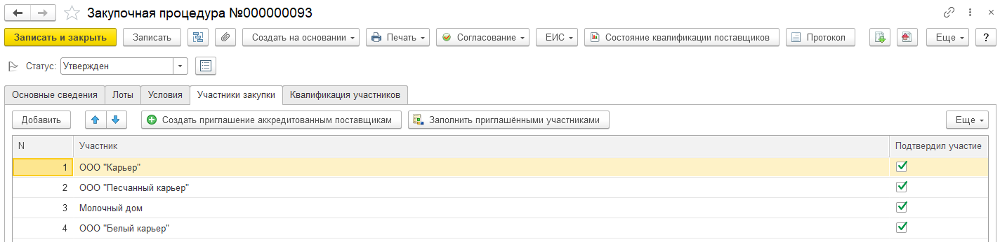

Приглашение аккредитованных поставщиков
Предназначен для приглашения аккредитованных поставщиков. Если проводится закрытая закупочная процедура, то организация может пригласить аккредитованных поставщиков к участию в закупочной процедуре. Если проводится открытая закупочная процедура, то Заказчик может уведомить аккредитованным поставщиков в дополнение к официально опубликованной информации о проведении закупочных процедур.
Заполнение документа
Документ можно ввести с закладки "Участники закупки"/ "Участники закрытой закупки" закупочной процедуры по команде "Создать приглашение аккредитованным поставщикам".

Документ приглашения содержит ссылку на закупочную процедуру, на основании которой выполняется приглашение аккредитованных поставщиков. Имеется несколько вариантов заполнения табличной части списком приглашенным по данным аккредитации:
- Аккредитованными поставщиками. В табличную часть будут добавлены все поставщики, имеющие действующую аккредитацию на дату подготовки к закупочной процедуре.
- Аккредитованными поставщиками по товарной категории. Если закупочная процедура проводится по товарной категории (в закупочной процедуре заполнено поле "Товарная категория" на закладке "Основные сведения"), то табличная часть будет заполнена аккредитованными поставщиками поставляющими товары указанной товарной категории. Данные о поставляемой товарной категории регистрируются службой снабжения в документе "Аккредитация поставщика".
- Аккредитованными поставщиками по ЭТП. Если закупочная процедура проводится в электронной форме, то на форме документа закупочная процедура указана ЭТП. Табличная часть приглашения будет заполнена поставщиками, указавшими в анкете регистрации в личный кабинет данную ЭТП.
Нажав на конверт (команда с картинкой "почтовый конверт") можно разослать оповещения (почтовые и в системе) аккредитованным поставщикам. Оповещение будет отправлено, если в системе настроены оповещения, иначе пользователь получит сообщение о неудачной отправке. При успешной отправке оповещения напротив приглашенного включится флажок "Оповещение отправлено".
Дополнительная информация
- Аккредитованные участники имеют картинку "человек с пометкой". Неаккредитованные - картинку "человек".
- В командном меню размещена команда выхода на отчет "Распределение поставщиков по ЭТП", который помогает посмотреть какие ЭТП используют аккредитованные поставщики.